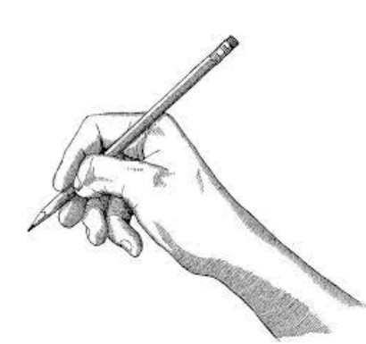
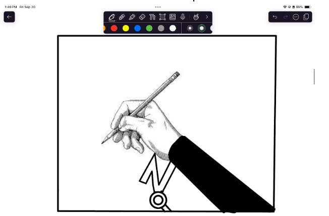
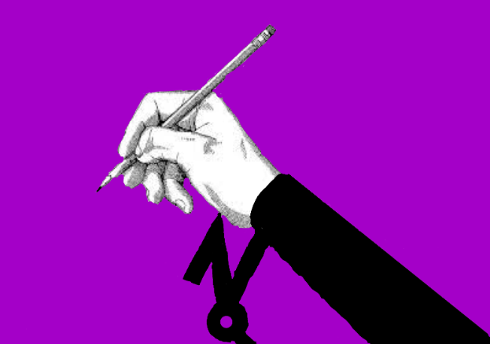

The Beginning
I decided to us the CAD software Fusion for my 3D model as it is the program I am most accustomed to and it would for a smooth and quick phase of designing a very rough 3D model of my final project. This software also provides me with tools that make the rough idea/design in my head very easy to execute saving me a lot of time and effort. Below will be the process taken to finish the rough 3D model I have created for the final version of my project.
Step 1

This is the first step of my process I wanted to make a quick sketch of the area that wrapped around the forearm to the wrist. Later this will become the layer of cushion between the main part that actually wraps around the forearm and wrist. I used the pipe function in Fusion 360 to mimic the shape of the arm and created a section that is hollow around 7 inches to fit the circumfrence of the arm. This section was also extended out about 10 inches to fit the length of half of the forearm to cover the tendons and muscles that are used in the wrists.
Step 2

In this section I wanted to design a piece to adjust the tightness of the device on the user to allow it to become more adaptable to each person rather than having a one size fits all situation. This is obviously a very rough idea of how I want it to look expect it to work similar to a tightener found on some backpacks or carry on materials which allow you to adjust the height or circumfrence of something to make it fit the user. To do this I used the coil funtion on Fusion and drew a circle that was around 3 inches in diameter and adjusted it to fit on the pipe I had already created. I want this component to stick out of our device allowing it to be easily acessible to the user without interfering with any other parts.
The Final Component

This step was the final touch to my rough design I wanted the inner part which was seen on step 1 to be the cushion on the inside of the device to allow a more comfortable experience for each of our users. I created a similar component as found oun step 1 using the same pipe function in Fusion but made it slightly larger to beocme the new wxterior of our device. I also had to asjust a couple of other features on previous steps to fit the new exterior such as the coil function I had used on step 2. This is the very rough 3D design of what I want my final product to be but I will keep on wokring and pursueing more ideas which will most likely result in this desing to change heavily.
2D Logo Designing
For my 2D logo I wanted another website/app that I was familiar with so I can make something I think looks good which led me to Notability. As the name suggests its mostly for taking notes and keeping documents organized but it has a lot of convenient features for drawing such as allowing you to create perfectly straight lines, circular circles, asjust brish sizes, etc. I used a lot of these features in my drawing and I think it will come out looking pretty decent considering I am not an artist.
Getting a Baseline
With the help from safari I was able to find the baseline of my logo which is a royalty free image provided by "iStock" which will be the centerpiece of my logo. The main reason I wished to use this hand holding a pencil is that it represents the target audience that our groups project hopes to solve which is wrist pain. This serves as my base and I have a couple of ideas as to where to take this image with.
Halfway There
Some of the ideas I had can be seen here, I will start with my initials "NQ" which I wanted to serve as almost a stand for the hand as you can see the Q holding the N up which in turn is holding the hand specifically in the wrist area. You can also see the addition of a sleeve on the hand which I wanted to add to showcase the way I want our product to end up looking like and I also think it looks cool. So far I think this logo is coming along well I just want to add a couple finishing touches.
Finished Design
This final update to my design was mainly just a touch up to the previous logo as I wanted it to include some more personal touches. The most obvious changre right off the bat is the fact that I changed the background to a nice purple. The reason for this is quite simple, I like the color. You may also have noticed the fact that my letters are now fully colored in black which is to allow them to stand out more from the purple background. I made some final touches to the background and hand as while I was making the backgorund I messed up and colored in a bit too much causing some issues with the hand. All in all the design is nice and im satisfied with the end result.